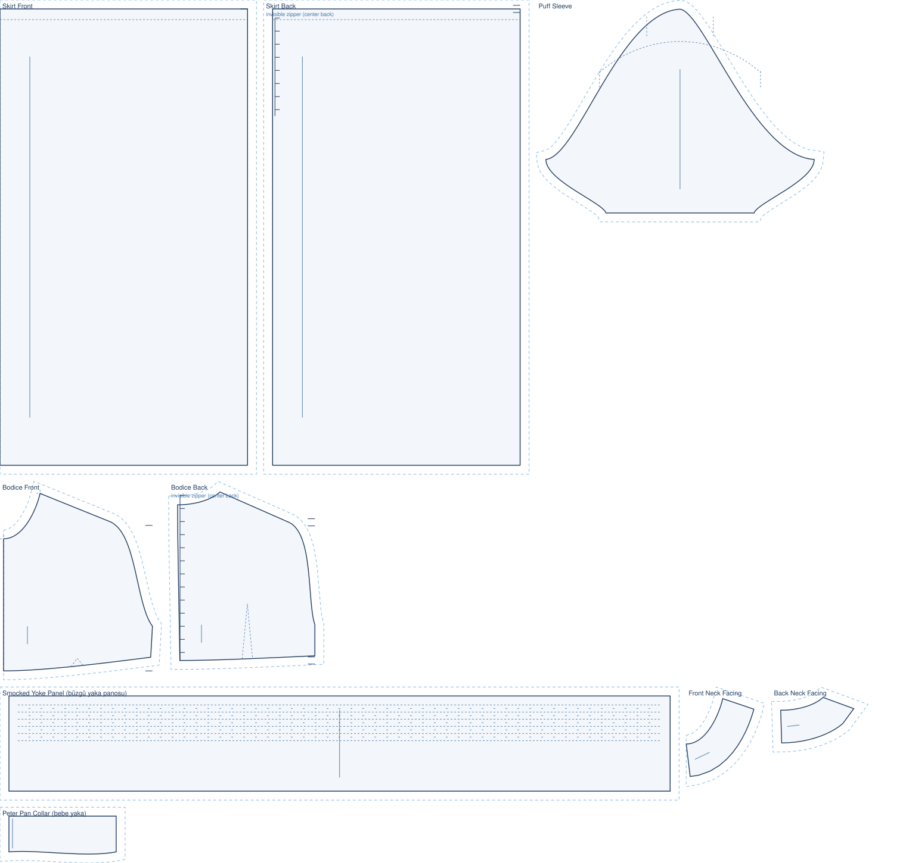

stitchu / patterns / Peter-pan collar puff-sleeve babydoll dress
A babydoll dress that pulls three added pieces together at once: a round peter-pan collar, a puff sleeve head and a smocked yoke. This is the pattern that proves several construction pieces can be drafted on one garment without any of them drifting.

The engine's own drafted pieces for this style, laid out for cutting. Drawn to an EU38 demo body.
The peter-pan collar is a separate flat piece with a round outer edge; its neck edge is measured straight off the drafted neckline so it fits the opening exactly.
The puff sleeve raises and widens the cap and gathers the crown, drawn from the plain sleeve rather than guessed at.
The smocked yoke panel is cut wider than the finished neck yoke and gathered down to it, the cut width taken from the drafted edge.
| pattern pieces | fabric estimate |
|---|---|
| Mid-weight woven cotton or poplin, roughly 2.6 m at 140 cm. 10 pieces · fabric scales to your measurements |
This pattern became possible in patch 1.8, when the engine learned to draft the peter-pan collar, the puff sleeve head and the smocked yoke. Before that, peter-pan collar puff-sleeve babydoll dress came out missing that piece.
See patch 1.8 in the patch notes →
Draft this to your measurements, free. Browse the pattern library →